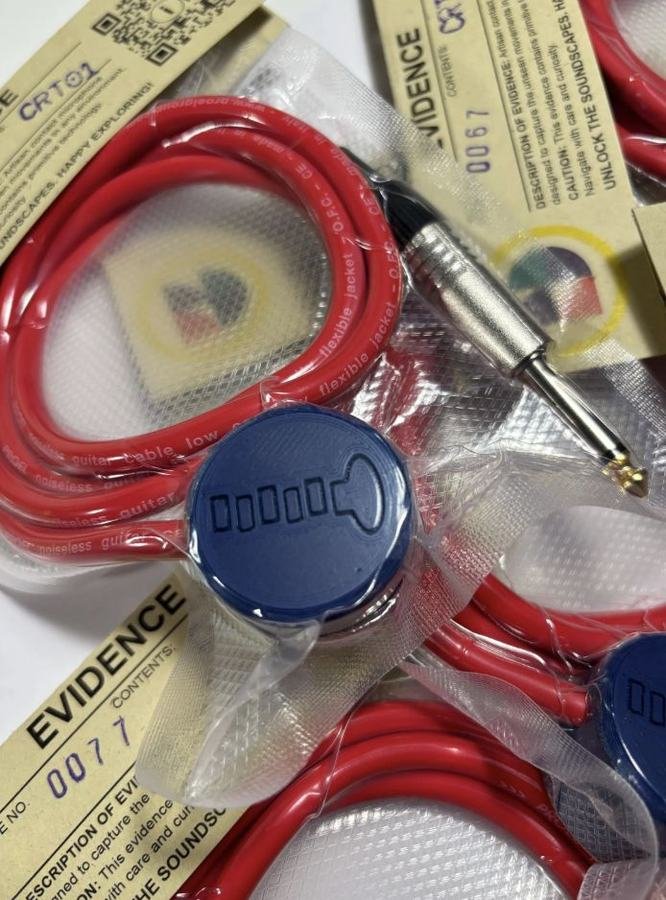
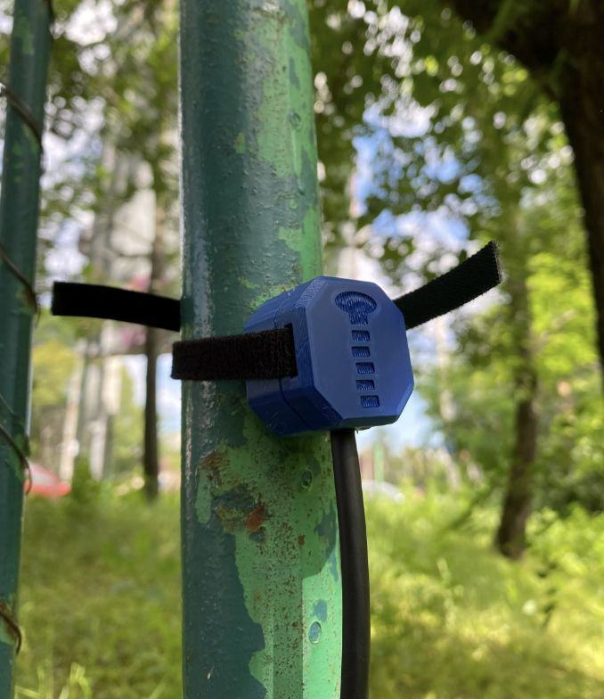
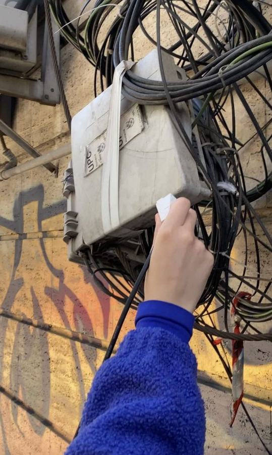
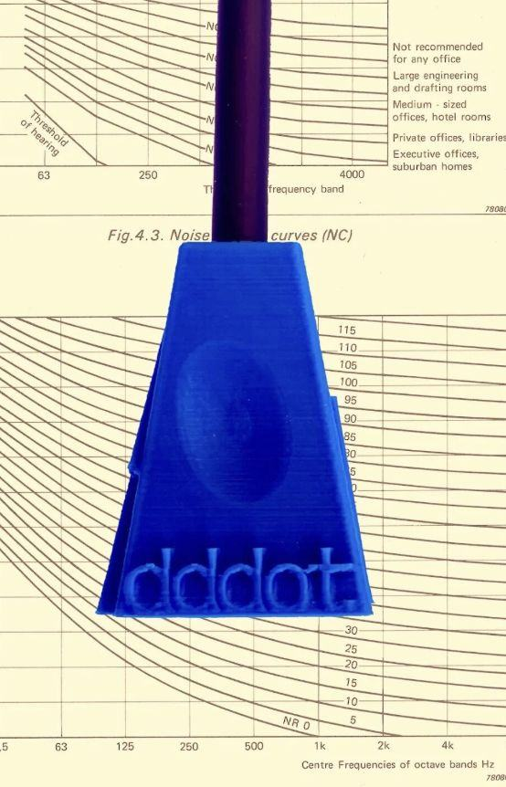
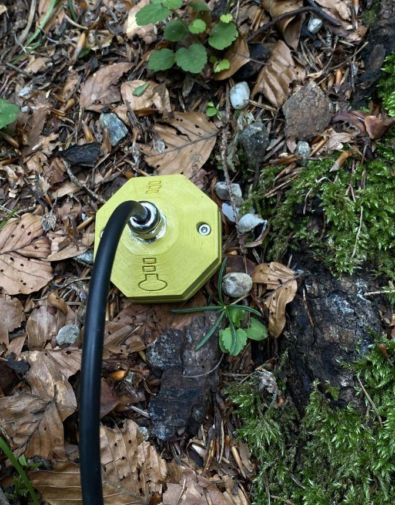
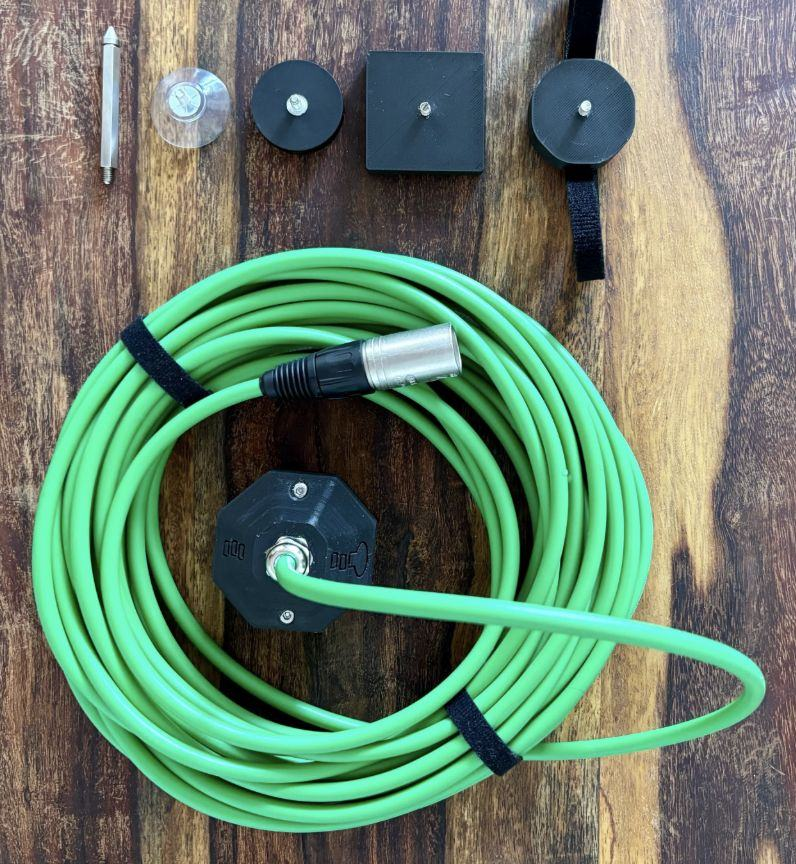
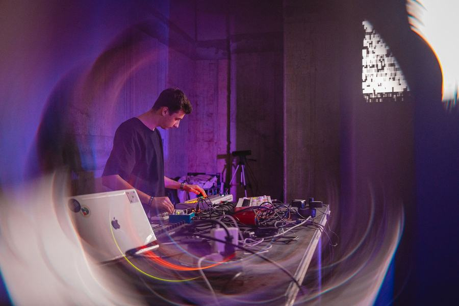
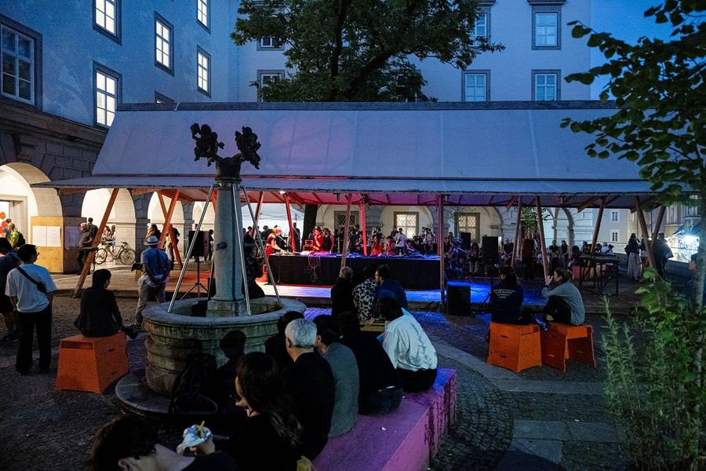
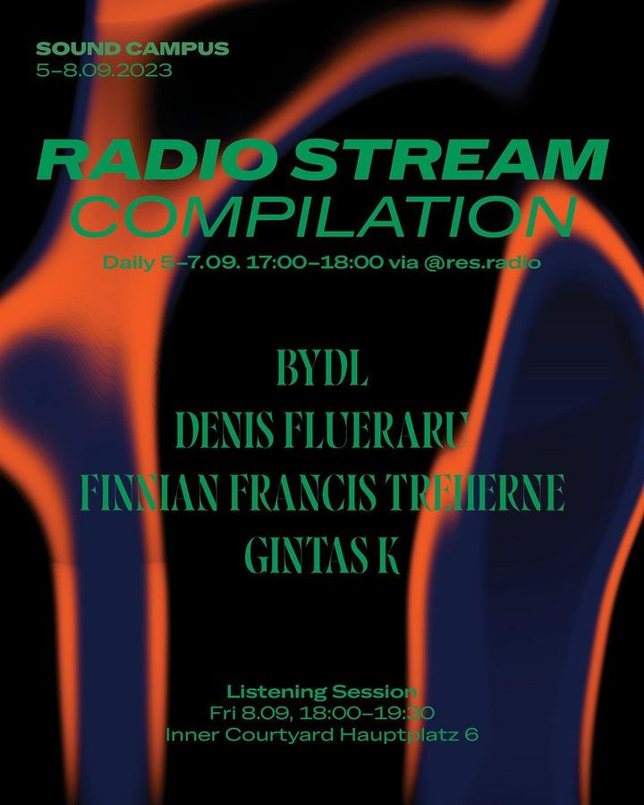
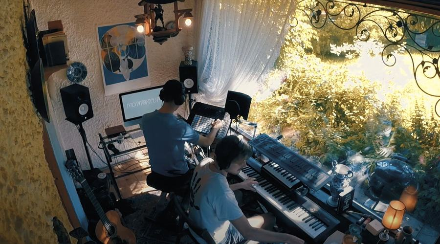

Aliases, custom instruments, performances and releases.
Instruments & performances
Custom instruments
I build bespoke microphones to record in specific environments — more at atomatlab.com ↗
My sound work has been presented at Sound Campus – Open Stream, Linz (AT), where Ruined Resonances was performed throughout Ars Electronica, and at RADAR 2023, Bucharest (RO), where I performed Sonic Imprints — an interactive audio-visual performance transcribing frequencies with a pen plotter.










Aliases
Two sonic identities
LESEL focuses on experimental electronic textures, while Addison Gardens opens space for blending guitar, improvisation and live performance approaches.